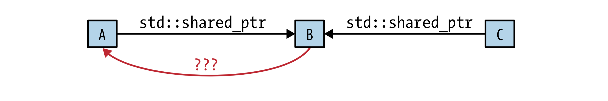

为什么C++中的原生指针那么的不讨人喜欢呢？
从它的声明你看不出他指向的是单一的对象还是一个数组
使用完了指针，你不知道要使用delete还是析构函数
当你知道了要用delete的时候，又不知道应该是delete还是delete[]
最后，你终于确定指针指向的内容了。但是你又不知道，前面有没有销毁。因为销毁代码只能执行一次。
目前，没有方法来确定指针是否是悬挂指针 (即一个指针不再拥有指向的内容，也就是说内容被销毁啦)
原生指针虽然是一个强大的工具，但是稍有不慎，这个工具就会反噬你！
1. 什么是智能指针
终于，智能指针出现了，智能指针表现起来很像原生指针，它相当于是原生指针的一层再包装，但是规避了许多使用原生指针带来的问题。
智能指针的作用是管理一个指针，因为存在以下这种情况：申请的空间在函数结束时忘记释放，造成内存泄漏。使用智能指针可以很大程度上的避免这个问题，因为智能指针就是一个类，当超出了类的作用域是，类会自动调用析构函数，析构函数会自动释放资源。所以智能指针的作用原理就是在函数结束时自动释放内存空间，不需要手动释放内存空间。
所以，我们应该尽量使用智能指针，它几乎做到了原生指针能做到的所有功能，却很少给你犯错的机会。
c++11标准中规定了3个智能指针：
1 | std::unique_ptr |
它们都可以用来辅助管理动态分配对象的生命周期，即确保这些对象在正确的时间以及发生异常时，用正确的方式被回收，确保不会产生内存泄漏。
2. std::unique_ptr
当你要使用一个指针的时候，首先应该想到的就是 std::unique_ptr ，因为它和原生指针无论是大小还是速度上都相同。
std::unique_ptr 实现了独占的思想，一个非空的 std::unique_ptr 永远拥有它指向的对象，并且无法被拷贝。因为，如果允许拷贝，那么就有两个 std::unique_ptr 指向相同的地方，每个指针都认为自己拥有销毁该对象的权利。
1 | void func() { |
上面的代码由于操作发生了异常，导致最后的delete并没有被执行。在C++98中，我们会使用非常笨重的try-catch来解决，但是使用智能指针就可以避免这样的问题。因为对象退出作用域的时候，智能指针将自动调用析构函数。
1 | void Func() { |
默认情况下，释放资源由delete来完成，也可以指定自定义的析构函数来替代。但是会增大开销。
因为 std::unique_ptr 不可被复制，但是C++11中提供了移动语义 (move操作)，可以转移对象的所有权！
1 | vector<unique_ptr<int>> vec; |
3. std::shared_ptr
当我们要让几个指针共同占有一个对象的时候， std::unique_ptr 就无法满足我们的需求了，这个时候另一个智能指针 std::shared_ptr 就应运而生啦，一个通过 std::shared_ptr 访问的对象被指向它的指针共享所有权。
每个 std::shared_ptr 关联一个计数器，它记录着有多少个 std::shared_ptr 指向了该资源。如果这个计数器变为了0，就证明没有指针指向它了，所以需要释放掉。
由于引用计数的存在，对性能会产生一定的影响：
std::shared_ptr的大小是原生指针的两倍，因为它们内部需要包含一个引用计数- 引用计数的内存是动态分配的
- 引用计数的增加和减少操作都必须是原子的（线程安全的），因为可能工作在多线程环境下
1 | shared_ptr<int> p1(new int(1024)); |
不能将一个new表达式返回的指针赋值给shared_ptr。
最稳妥的方式，就是使用 make_shared
1 | shared_ptr<string> p1 = make_shared<string>(""); |
4. std::weak_ptr
std::weak_ptr 是为了配合 std::shared_ptr 而引入的一种智能指针，将一个weak_ptr绑定到一个shared_ptr不会改变shared_ptr的引用计数。不论是否有weak_ptr指向，一旦最后一个指向对象的shared_ptr被销毁，对象就会被释放。从这个角度看，weak_ptr更像是shared_ptr的一个助手而不是智能指针。
当我们创建一个weak_ptr时，需要用一个shared_ptr实例来初始化weak_ptr
1 | shared_ptr<int> sp(new int(5)); |
你可能有这样的疑问，如果shared_ptr指向的东西被释放掉了，那weak_ptr怎么办呢？
C++中为weak_ptr设计了一个lock函数，如果weak_ptr是悬挂的状态 (即shared_ptr被释放掉了) ，lock会返回null值，否则返回它所绑定的shared_ptr。
weak_ptr到底有啥用？
完成一个带缓存的工厂函数
1
2
3
4
5
6
7
8
9
10
11std::shared_ptr<const Widget> fastLoadWidget(WidgetId id) {
static std::unordered_map<WidgetID, std::weak_ptr<const Widget>> cache;
auto objPtr = cache[id].lock(); //objPtr是std::shared_ptr类型
//指向了被缓存的对象(如果对象不在缓存中则是null)
if(!objPtr){
objPtr = loadWidget(id);
cache[id] = objPtr;
} //如果不在缓存中，载入并且缓存它
return objPtr;
}为什么要这么写这个函数呢？假如fastLoadWidget这个函数每调用一次，都要进行一次磁盘的IO操作。为了提高效率，我们要使用一个cache来记录最近被使用过的widget。自然你会想到使用Hash表，但是如果Hash的对象自然不能是
shared_ptr，因为它被拷贝之后，在cache中永远不会被销毁。这个时候，
weak_ptr就派上用场了，因为它关联的shared_ptr如果被销毁了，它自然就被悬挂了。解决环型问题

有这样一个数据结构，包含A，B和C。A和C共享B的所有权，它们各自包含了一个std::shared_ptr指向B。
这个时候，如果要让B拥有反向指针指向A，那么指针应该是什么类型？
一个原生指针：如果A被析构了，但是C会继续指向B，B指向A的指针就处于悬挂状态了。但是B对此毫不知情，假如B继续使用这个悬挂指针，就会引发异常。
一个std::shared_ptr：这样A和B会形成环，A和B中shared_ptr的计数都是1，永远无法被回收。
一个std::weak_ptr：最优解，如果A被回收，B指向A的指针会被悬挂，B也有能力检测到这一状态。
5. std::auto_ptr
- auto_ptr不能共享所有权，即不要让两个auto_ptr指向同一个对象。
- auto_ptr不能指向数组，因为auto_ptr在析构的时候只是调用delete,而数组应该要调用delete[]。
- auto_ptr只是一种简单的智能指针，如有特殊需求，需要使用其他智能指针，比如share_ptr。
- auto_ptr不能作为容器对象，STL容器中的元素经常要支持拷贝，赋值等操作，在这过程中auto_ptr会传递所有权。
尽量避免使用std::auto_ptr